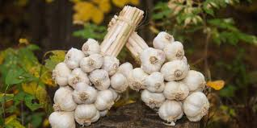
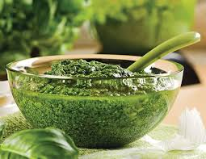
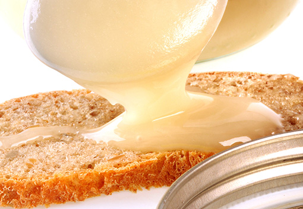
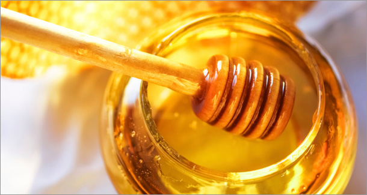
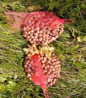
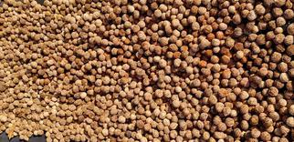

Au coeur de la campagne lavalloise, nous voulons vous faire découvrir nos passions: les chevaux et la nature.
Dans un cadre bien établi, en milieu périurbain, la Ferme L'Auteuilloise est un complexe agrotouristique qui personnalise ses programmes d'activités selon les goûts et l'âge de ses visiteurs.
Vu la situation en zone rouge
Les randonnées sont annulées pour une période indéterminés
Les cours privés (8 ans et plus)
sont maintenues
Automne 2020
AIL 2020 EST DE RETOUR
À La Ferme L'Auteuilloise, nous cultivons depuis 2015 de façon biologique ''ail music''
Une belle et grande variété, avec sa peau blanche rehaussée de rose, facile à peler.
Une saveur prononcée, un vrai goût d'ail qui reste longtemps en bouche.
Nous transformons l'ail en:
Manouille

Pesto

MIEL
À La Ferme L'Auteuilloise, depuis maintenant 20 ans, nous récoltons un miel de fleurs sauvages.
Miel non pasteurisé, il conserve toute sa qualité bienfaisante mais non recommandée aux enfants
de moins de 1 an.
Nous offrons le miel:
Miel barraté

Miel liquide

MÉLI-MÉ-NOIX
Noisettes 2019
Lavé en période de séchage
Sans pesticide
10.00$/livre

Noix de noyer noir 2019
Lavé en période de séchage
Sans pesticide
7.50$/livre

LA FERME L'AUTEUILLOISE
Se propose de donner une seconde vie à votre matériel équestre qui ne vous est plus utile et nécessaire ou même qui vous embarrasse.
Par voie d'une mini friperie nous acceptons tout matériel tel que: Bombe, harnachement, bottes, vêtements équestres, etc.
Nous sommes prêts à aller le chercher à votre domicile.
C'est l'occasion d'aider les nouveaux cavaliers à moindre coût.
Cours -- 2020
1- DÉFIS DU MOIS savoir faire
Avec les professeurs d'équitation, les cavaliers ont un défi à relever différent à tous les mois. La participation selon l'expérience.
2- SUJET DE RÉGIE savoir théorique
Avec les professeurs de régie, les cavaliers auront à chaque mois des objectifs d'apprentissage pour mieux connaître et s'occuper des chevaux.
Il y aura un tirage à tout les mois pour ceux et celles qui participeront aux défis.
JANVIER
Défi: Sans étrier
Régie: Le pied
FÉVRIER
Défi: Sans selle
Régie: L'avant main
MARS
Défi: Pôles par terre
Régie: La tête
AVRIL
Défi: Ligne d'exercise
Régie: L'arrière main
MAI
Défi: Pratique concours
école
Régie: La bride
JUIN
Défi: Les parcours
Régie: La selle
JUILLET
Défi: Travail au sol
Régie: Le pansage
AOÛT
Défi: Parcours sur
pelouse
Régie: Le non verbal
du cheval
SEPTEMBRE
Défi: La longe
Pratique pour les
cavaliers
Régie: Sécurité dans
l'écurie
OCTOBRE
Défi: Figures de manège
Régie: Le manège
NOVEMBRE
Défi: Dressage
Régie: La régie
DÉCEMBRE
Défi: Trec / Jeux
Régie: Le corps